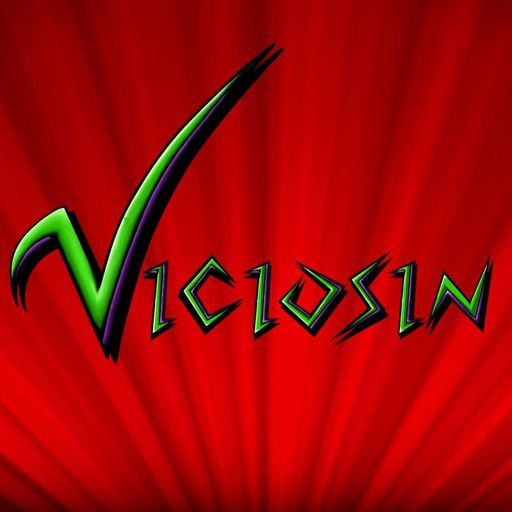
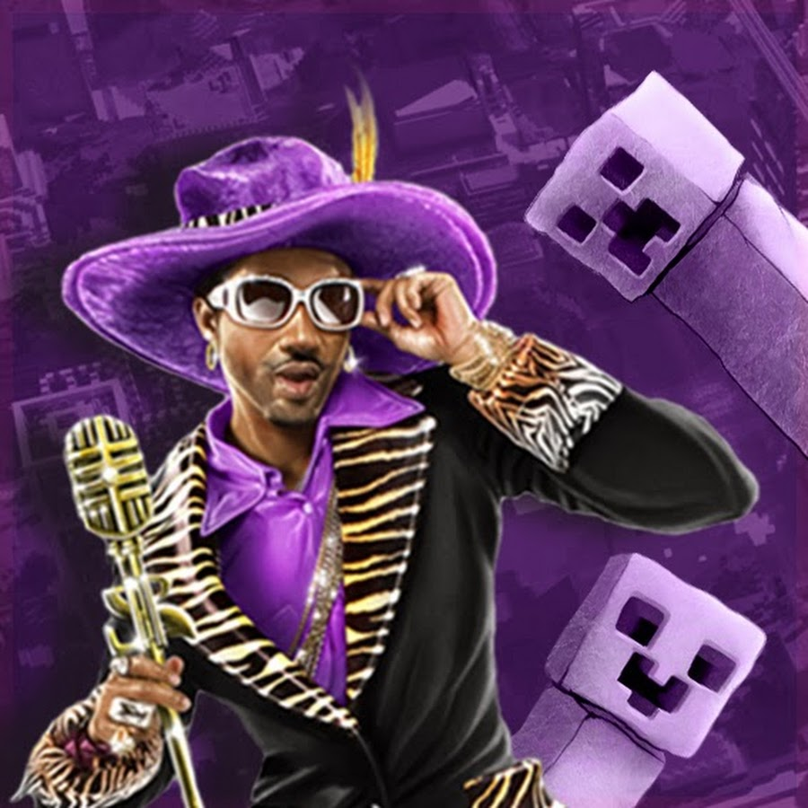
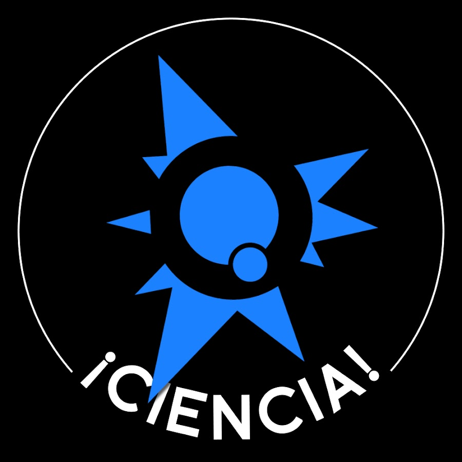
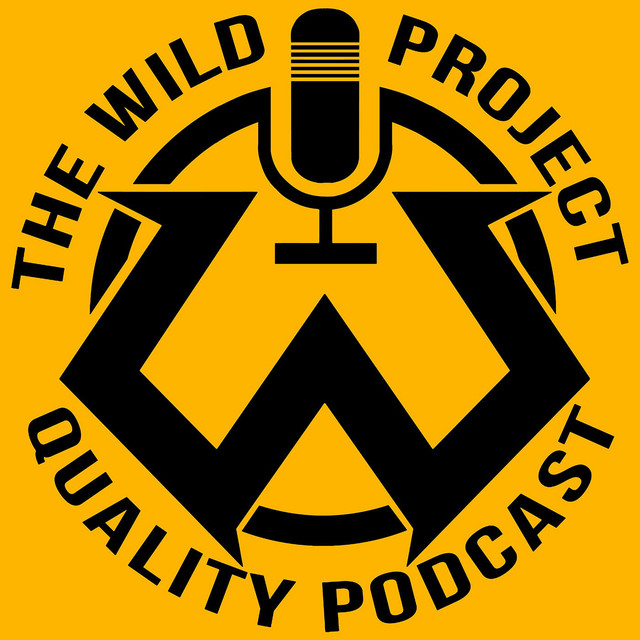
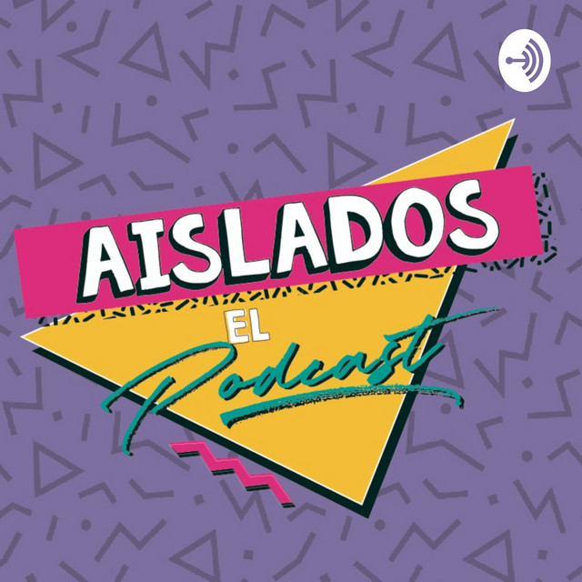

En esta seccion van a poder encontrar canales de yotube que les recomiendo.
Canales de Youtube
Canales que suben gameplays
Los gameplays, son videos jugando videojuegos.
Jugando Con Natalia
Jugando con Natalia, es un canal de gameplays argentino. Creado por Juan Manuel Paradiso de 37 años. Su humor y facilidad para expresarse hace que sea muy entretenido verlo. Sube contenido variado, no solo gameplays, sino que tambien hace vlogs, unboxing, etc. Actualmente, cuenta con casi 3 millones de suscriptores.

Viciosin

Viciosin, es un canal argentino de gameplays. Es el hermano de la persona detras de jugando con natalia. Tiene un humor muy argentino y muy propio. Ademas de tener un contenido muy variado. Gracias a todo eso, es un youtuber de bastante exito y muy entretenido de ver. Actualmente, cuenta con casi medio millon de suscriptores
Vegetta777

Cuando nombramos a Vegetta, estamos hablando de una leyenda del youtube hispano. Es reconocido por sus gameplays de minecraft. Tiene un carisma y un humor muy particular. Si tu gusta el minecraft, es un canal para vos. Actualmente, cuenta con 33.8 millones de suscriptores.
Canales de divulacion cientifica
En esta parte encontraras canales relacionados a la fisica, quimica y todo aquello relacionado a la ciencia.
Date un vlog
Este canal le pertenece al famoso fisico español Javier Santaolalla. En su canal vas a poder encontrar contenido relacionado a todo el mundo de la ciencia y tambien videos de como funciona nuestro mundo, explicaciones sobre videos virales y su fundamento cientifico, etc. Actualmente, cuenta con 2.58 millones de suscriptores.
QuantumFracture

Este canal es manejado por el fisico español Crespo Cepada. En su canal sube principalmente videos cortos que con animaciones narradas, los cuales tratan de explicar de la manera más sencilla o entendible cuestiones sobre física (del universo, cuántica, relatividad, desmontar mitos...) o algún otro tema relacionado con la ciencia. Actualmente, cuuenta con mas de 3 millones de suscriptores.
Podcasts
En esta seccion, encontraras podcasts de diversos temas.
The Wild Proyect

The Wild Proyect es un canal de podcast creado por Jordi wild, el famoso youtuber español. En esta serie de podcast podras encontrar contenido de todo tipo: cyberseguridad, fisica, politica, economia y tambien tartulias con invitados para hablar de las noticias mas recientes. Actualmente, cuenta con 3.89 millones de suscriptores.
Aislados el podcast

Es un canal de youtube, donde suben los episodios del podcast. El cual esta realiazado por 4 comediantes, 3 argentinos y un venezolano. Los cuales son: Lucas Lauriente; Lucho Mellera; Nicolas De Tracy y victor (Nanutria). En este podcast, hablan de anecdotas, de la vida, etc. Actualmente, cuenta con mas de 80 mil suscriptores.